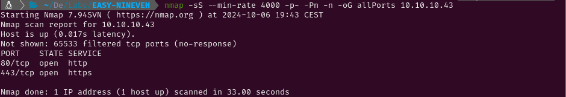
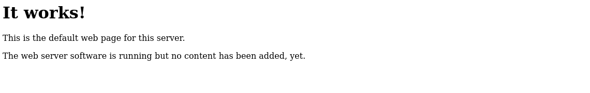

MEDIUM - NINEVEH
1. Recon
Nmap
nmap finds two open ports: HTTP (80) and HTTPS (443).

The NSE (Nmap Scripting Engine) finds the following information:
- The box is using Ubuntu
- The version of the SSH service is 7.2p2
- Both HTTP and HTTPS services are using Apache 2.4.18.
- Nineveh.htb is a domain name

Website - TCP 80
The first thing to be done is adding nineveh.htb to the /etc/hosts file. Then, I have visited http://10.10.10.43/ where a ‘It works’ message is displayed. Checking the files loaded in the ‘Network’ tab, the cookies or the source code of the page I havcen’t found anything interesting so I am going to try finding hidden directories and files using gobuster. The first two results are the default page and the information about the PHP version which is being used. The third result is a directory which I will fuzz too.



A bunch of files and directories are found inside department. None of them show anything apart from login.php which has a login form. Inspecting the source code of the page I have found a message from the administrator to a user called amrois saying that MySQML has been installed and asking them to fix the login page.


After a while trying to bypass the login form using SQL injections I have decided to run hydra to try bruteforcing it. The message of the admin has led me to think the login page would be vulnerable to something related to MySQL, but after a few seconds hydra finds the password (1q2w3e4r5t) for the user admin. After using the found credentials a page with an image is displayed and it seems that the site is under construction.


There are three buttons in the top side menu. The second seems to load a note right below the image. Looking the URL I notice that a parameter is being used to load a file from the system. This could lead to a Local File Inclusion vulnerability if the parameter input is not correctly sanitized.

Trying to achieve loading files from the system using the notes parameter I have noticed that if the string ‘/ninevehNotes’ is not in the route of the file, a message which says ‘No note is selected’ is displayed. However, if that string is written but the file doesn’t exist, it will throw an error. It seems that the server checks if that string is in the value of the notes parameter and then tries searching the file in the system. Knowing this information, I have tried accessing the file /etc/passwd writing ‘/ninevehNotes’ before typing the path to that file and it has been succesfully displayed.


Website - TCP 443
Visiting https://10.10.10.43/ an image with two soldiers celebrating is displayed. Once again I can’t find anything else so I will try fuzzing hidden files and directories with gobuster as I did with port 80 earlier.

Three results are found. The first one is the page with the image of the soldiers, the second one is a directory called db which contains a login form for a phpLiteAdmin v1.9 and the third one is another directory which displays an image when visited.


Using gobuster to fuzz files and directories inside /db/ and /secure_notes/ hasn’t worked at all. I find it weird that there are two images with no context so before looking for known vulnerabilities for phpLiteAdmin v1.9 I will download them and check if there is any useful information in the exif data or in the strings of the images. Indeed, using strings I have found a private key and an authorized key for the user amrois. However, SSH was not among the available services so I can’t use them.

A quick Google search shows that this version of phpLiteAdmin has a remote code execution vulnerability but authentication is required for that. This time I will bruteforce with hydra first and while it runs I will try bypassing the login form with SQL injections. After a few moments the password is found (password123). Logging in displays the databases management panel.


2. Gaining Access
Following the exploit I will create a database called hack.php and inside I will create a table with a text field. The default value field must be filled with the code that will be executed in the server so I will use this code <?php echo shell_exec("id"); ?> to check if the command execution is working properly.


Now, for the webshell to run, I have to access the database. The Structure tab of the hack.php page shows that the path to the database is /var/tmp/hack.php. To access that file I will use the LFI I found earlier in the department page in port 80.

The code is running properly so instead of running id, I will drop the table and create it again with a reverse shell instead.


3. Privilege Escalation
Root
After using ps aux to monitor the running processes, I have seen that a binary called chkrootkit and a bash script called vulnScan.sh are running in the target. I have no permissions to read or write any of them but searching the name of the binary in Google I can see that chkrootkit is an application to find signs of rootkits locally. There is an existing exploit for this software that allows attackers to get root access. This happens because when the binary is executed, the content of the file ${ROOTDIR}tmp/update is run as the user which executes the binary.

In this case, root is running the binary periodically, so I create a file called upload in /tmp. This file contains an executable code which send a shell to my kali. After that, I give execution permissions to it (chmod +x upload) and the next time chkrootkit is executed, a shell spawns in my netcat listener allowing me to read and submit the flags.


Amrois
Although the machine is already rooted, I have also noticed that knockd is running, so I try reading the configuration file for this process and I discover that I can knock the ports 571, 290 and 911 to open the port 22 (SSH).


Scanning the port 22 with nmap shows that is in a filtered state so I cannot access to the user amrois with the RSA Private Key that I found in the strings of an image earlier. But after scanning the ports 571, 290 and 911 in that order, its state turns to open.


Now I can use the id_rsa key to login through ssh as the user amrois.